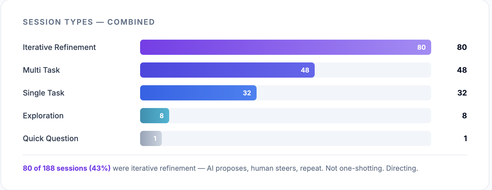
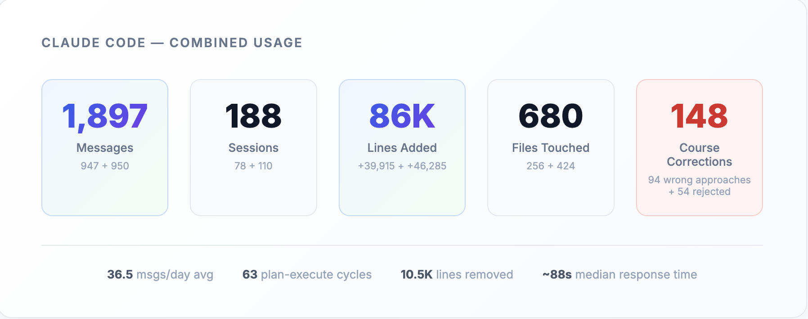
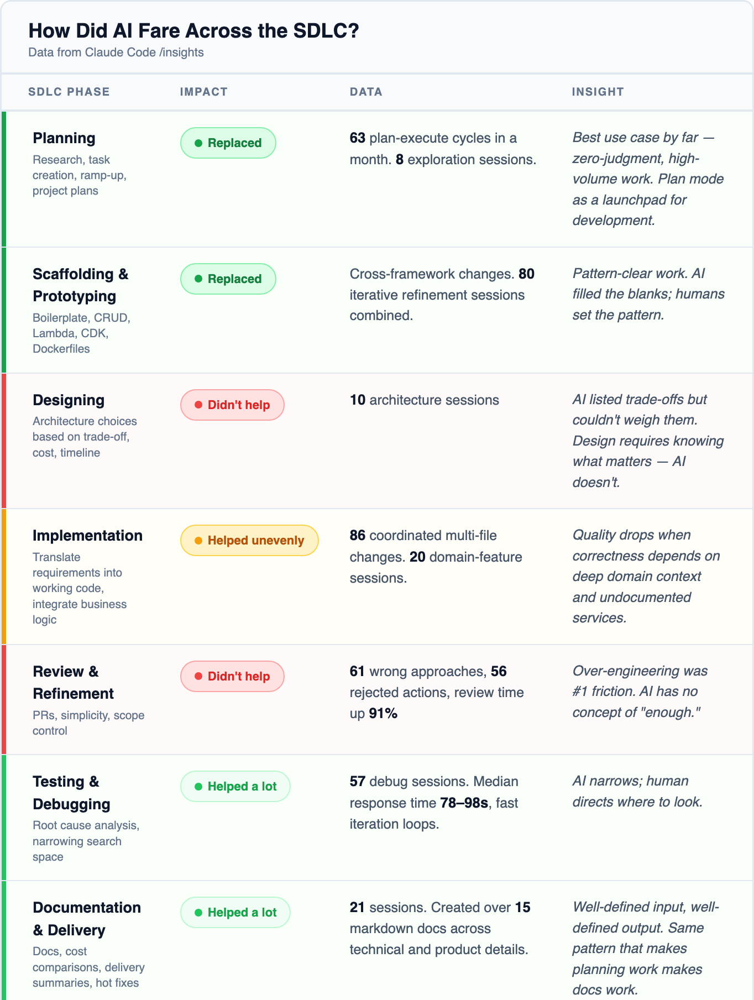

86,000 lines of code generated.
1,897 messages.
680 files changed.
188 sessions.
2 Developers.
2 months.
That's what it took to ship an AI ChatBot to production on AWS. Orchestrator, sub-agents, AgentCore, Strands, CDK. Completely built using AI Agents. We decided early on to go all-in on AI coding tools for the entire build.
We used Claude Code as the primary workhorse, Gemini Deep Research when we needed to go deeper. From Planning, Prototyping, Development, Testing and Documentation. We used AI in every single step of the software development life cycle.
What happened was not everything that the hype promised. But this is what we learnt.
The Planning Phase: Where AI Actually Earns Its Keep
Every project starts with the same grind: reading docs, understanding architecture, figuring out what already exists and what you need to build. This is where AI tools genuinely helped.
We fed the agents the Bedrock AgentCore documentation, the Strands framework guides, and existing internal architecture docs. Claude Code handled the bulk of it: summarizing docs, understanding existing codebase patterns, generating project plans, breaking work into tasks. For deeper dives, like comparing architectural approaches across services or synthesizing large volumes of documentation, we used Gemini Deep Research.
When you're ramping up on a new stack, having something that can distill 40 pages of documentation and code examples into the three things that actually matter for your use case is real value. It felt like having a capable research assistant sitting next to you, generating a handy document, with all the sources cited. It really boosted our confidence as it chipped off hours that would be spent by us on research, instead of coding.
The catch showed up early, though. All of this needed us to find and feed in the right documentation ourselves. The agents don't know what they don't know. Ask an agent about a service without giving it the docs, and it'll produce a confident, plausible-sounding summary that's partly wrong. We learned to verify everything, which meant the research phase took roughly the same time it always does. We just spent that time differently. Less reading, more verifying.
Development: The Reality Check
This is where expectations met reality, and reality won.

The repeatable stuff got faster. CRUD APIs, boilerplate CDK stacks, Lambda scaffolding. The kind of code where the pattern is clear and you're mostly filling in the blanks. Claude Code handled this well. We estimated a roughly 30% throughput improvement on these tasks. That's meaningful. It's not the 10x that gets thrown around on Twitter, but it's real and reliable.
The debugging workflow improved too. Having Claude analyze CloudWatch logs, suggest root causes, automate log fetching. It narrowed the search space faster than doing it manually. Not a replacement for understanding the system, but a good first pass.
Then we hit business logic. And newer AWS services. And everything slowed back down to normal.
When we worked on the core agent orchestration, the parts that required understanding AgentCore's actual capabilities and Strands' real API surface, estimates didn't shrink. The cycle looked like this: understand the problem, craft the right prompt, review the output, validate correctness. The "writing code" step got faster. Everything around it didn't. And everything around it was always most of the work.
Here's the strongest example. When shipping infrastructure and architectural features, Claude confidently used AWS features and APIs that didn't exist. The code looked right. The patterns made sense. The CloudFormation resources had plausible names. But the features were fabricated. We'd run a deployment, it would fail, and we'd spend time debugging before realizing the API call itself was imaginary.
The only fix was feeding Claude exact official documentation and code examples from AWS sources, manually finding the right docs, pasting them in, and steering it to the correct implementation. This happened repeatedly with AgentCore and Strands, both being newer services with less training data.
The verification became the bottleneck. You debug the bug, then you debug the fix. The agent suggests a solution, you validate it, it's wrong in a different way, you feed it more context, it tries again. Some cycles ended faster than writing it yourself. Some took longer.
PRs ballooned. Claude Code generates more code per session than you'd write manually. Our PRs grew in size, and review time grew with them. 1 to 2 days per PR for meaningful review, compared to what would normally be smaller, faster merges. Addy Osmani's research on agentic coding found the same pattern at scale: high-adoption teams merged 98% more PRs, but review times ballooned 91%. We were a two-person team and we still felt it.
This maps to something the Blundergoat article nails: AI makes the easy part easier and the hard part harder. Writing code was never the hard part. Understanding the problem, making architectural decisions, choosing between multiple valid implementations. That's the job. The agent doesn't know your specific best practices, your team's trade-offs, your system's constraints. Multiple valid implementations exist for any non-trivial feature. An experienced engineer still has to decide which one fits, and feed that context to the agent.
The numbers: two developers, 50+ PRs over two months, one-week sprints. We averaged 10 to 12 story points per developer per week. That's roughly what we'd do without AI tools. The throughput didn't double. It didn't increase by 50%. The 30% improvement showed up on repeatable, non-business-logic tasks. Most of our time still went to research and architecture, exactly where AI helps least.

Delivery Phase: Where AI Earns Its Keep Again
The project wrapped and we moved into documentation and handover. This is where AI tools pulled their weight again, following the same pattern as the research phase. Well-defined input, well-defined output.
Deployment became easier too. We no longer had to spend time figuring out the right scripts, setting up local testing templates, or manually wiring up environments just to validate changes. Claude could test local scaffolding in minutes, this was extremely important building a product built on a service not widely adopted yet. The quality obviously depended on how clearly the testing requirements were specified but when the instructions were precise, the output was reliable.
Documentation generation, updating existing docs, creating deployment checklists, writing handover materials. Give Claude Code the codebase and ask it to produce structured documentation, and it does a good job. The output still needed editing, but the first draft was 80% there. For a task that engineers typically deprioritize, having a fast first pass meant the documentation actually got written.
The pattern was clear by this point. AI tools are strongest at the bookends of a project: consuming and producing structured information. The messy middle, where you're making decisions, debugging novel problems, building things that don't have established patterns, that's still yours - now more than ever.

What We'd Change Next Time
Knowing how our agents performed, if we were to do it again for the same project. This is what we would change -
Invest in agent preparation upfront. Write a proper CLAUDE.md / AGENTS.md with project-specific best practices, architectural patterns, and conventions before starting development. Include code examples of the patterns you want followed. This is the single highest-ROI activity. It compounds across every prompt for the entire project. We didn't do this well enough and paid for it in repeated corrections.
Rethink how you split tickets. We created module-level tickets expecting the agent to implement them in one shot. That produced large PRs that took days to review. Split tickets based on how the agent will implement them and how easy the output will be to verify. Smaller, focused tickets produce better agent output and faster reviews. The ticket structure needs to account for the review bottleneck, not just the implementation.
Budget agent prep time into estimates. The time spent preparing context, writing skills files, and curating documentation eventually balances against throughput gains. Don't pretend it's free. If your sprint planning assumes AI makes everything faster but doesn't account for the preparation overhead, your estimates will be off in the wrong direction.
Identify repeatable modules early. At project kickoff, catalog which parts are boilerplate versus novel. Direct AI effort at the boilerplate. That's where the faster delivery improvement lives. For the novel parts, the agent is a research assistant, not a developer. Plan accordingly.
Start simple. Don't set up a complex multi-agent development workflow from day one. Start with basic Claude Code usage, build skills and documentation files as you learn what works for your specific project. Complex setups scare the team and reduce the quality control that matters most in the early stages when patterns are still being established.
Educate the team on realistic expectations. Everyone needs to understand what AI actually does well and where it falls short. Developers own every line the agent writes. If it breaks "the AI wrote it" shouldn't be an answer. That means reading the generated code, understanding it, and being able to defend every decision in it.
Encourage better context engineering over one-shotting features. Writing a detailed prompt with constraints, examples, and references produces better output than typing "build me a user service" and hoping for the best. Establish team guidelines for how to use the tools: when to provide documentation, how to structure prompts, what to review carefully versus what to trust. Misaligned expectations cause more damage than the tools save.
Upskill the agent with smart integrations. While we did use the official Agentcore MCP server and some skills. Spending time setting up the agentic workflow with plugins, skills, subagents, LSP's, custom slash commands, hooks and relevant MCP's will provide your model with all the relevant context it needs to to perform the best. Emphasis on relevant context. More tools doesn't mean better output. Curate the integrations that match your stack and cut everything else.
So, can it replace a senior software developer or solutions architect?
No, not yet.
What it has done is shift our roles. The developer moves from author to architect and reviewer. While the architect now bridges the gap between design and working code in hours instead of weeks.
These AI tools don't remove responsibility, they reallocate it. And here's our controversial take: the roles are converging. When the architect can build faster than ever, and the developer doesn't need to type as much, what separates them is no longer execution. It's the altitude at which decisions are made.
So, the throughput story isn't "2x faster." It's "same speed, with the effort redistributed." The writing got faster. The thinking didn't.
And thinking was always the job.
This post was originally published on AntStack's Blog.